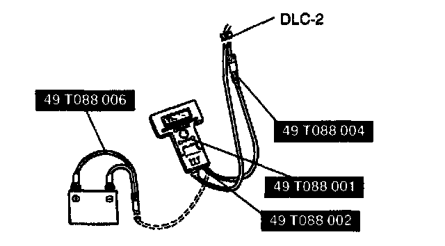

Fuel Cut Control Unit: Testing and Inspection
Fuel Cut Control Inspection1. Warm up the engine and let it idle.
2. Turn off the electrical loads and A/C switch.

3. Connect the NGS tester to DLC-2.
4. Select "PID/DATA MONITOR AND RECORD" and press TRIGGER.
5. Select "RPM" and "INJ". Then, press TRIGGER.
6. Press START.
7. Monitor both PIDs while performing the following steps:
1. Depress the accelerator pedal and increase the engine speed to 2,500 rpm.
2. Release the accelerator pedal (brake pedal is not depressed) and verify that the fuel injector duration time is 0 msec., and 2-5 msec. when the engine speed drops below 1,000 rpm.